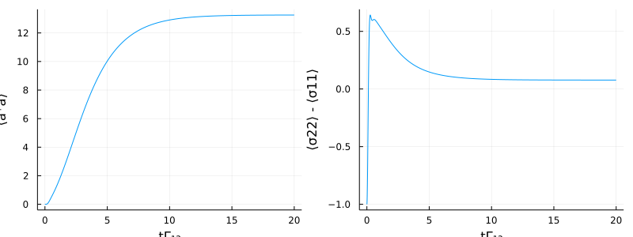

Many-atom laser
This example describes a second order laser system consisting of $N$ three-level atoms coupled to a single mode cavity. An auxiliary state $|3\rangle$, which quickly decays into the upper lasing state $|2\rangle$, is coherently pumped to achieve population inversion on the lasing transition $|1\rangle \leftrightarrow |2\rangle$. The Hamiltonian of this system is given by
\[H = -\Delta_{c} a^{\dagger} a - \sum_{i=1}^N \left[ \Delta_3^i \sigma_i^{33} + g_i (a^{\dagger} \sigma_i^{12} + a\sigma_i^{21}) + \Omega_i (\sigma_i^{31} + \sigma_i^{13}) \right].\]
Including dissipative processes as, e.g. the atomic decay or photon losses through the cavity mirrors, makes it an open quantum system. In the Schrödinger picture we would compute the dynamics of such open quantum systems with a density matrix $\rho$ according to a master equation (see e.g. https://docs.qojulia.org/),
\[\frac{d}{dt} \rho = - \frac{i}{\hbar} \left[ H, \rho \right] + \mathcal{L}[\rho],\]
with $\mathcal{L}[\rho] = \frac{\gamma}{2} (2 J \rho J^\dagger - J^\dagger J \rho - \rho J^\dagger J)$ the Liouvillian superoperator in standard Lindblad form for a dissipative process with jump operator $J$ and rate $R$.
With QuantumCumulants.jl we describe the system dynamics with averages, which are deduced from the operator equations of motion in the Heisenberg picture. In the Heisenberg picture open systems are described by the quantum Langevin equation. Assuming white noise, we can omit the stochastic terms of the quantum Langevin equation when computing averages. Thus we get the following equation for the time evolution of a system operator average $\langle O \rangle$ (if $O$ is not explicitly time dependent):
\[\frac{d}{dt} \langle O \rangle = \frac{i}{\hbar} \left[ H, O \right] + \bar{\mathcal{L}}[O].\]
The superoperator $\bar{\mathcal{L}}[O]$ is similar to the Lindblad term in the Schrödinger picture, except that $J$ and $J^\dagger$ are swapped in the first term, i.e. $\bar{\mathcal{L}}[O] = \frac{\gamma}{2} (2 J^\dagger O J - J^\dagger J O - O J^\dagger J)$, for a dissipative process with jump operator $J$ and rate $R$.
For our system we have four different dissipative processes with the jump operators $a$, $\sigma^{12}_i$, $\sigma^{13}_i$ and $\sigma^{23}_i$, and the corresponding decay rates $\kappa$, $\Gamma^i_{12}$, $\Gamma^i_{13}$ and $\Gamma^i_{23}$, respectively.
We start by loading the needed packages.
using QuantumCumulants
using ModelingToolkit, OrdinaryDiffEq
using PlotsThen we define the symbolic parameters of the system, the Hilbertspace and the necessary operators. We define an atomic transition operator function $\sigma(i,j,k)$ for the transition from $|j \rangle$ to $|i \rangle$ of atom $k$. Since we only have one FockSpace we do not need to specify the Hilbertspace on which the Destroy operator acts. For the different atomic transitions, however, we need to specify this, since there is more than one NLevelSpace. This information is stored in the .aon field of each operator.
# Parameters
N = 2 #number of atoms
κ, g, Γ23, Γ13, Γ12, Ω, Δc, Δ3 = cnumbers("κ g Γ_{23} Γ_{13} Γ_{12} Ω Δ_c Δ_3")
# Hilbertspace
hf = FockSpace(:cavity)
ha = ⊗([NLevelSpace(Symbol(:atom,i),3) for i=1:N]...)
h = hf ⊗ ha
# Operators
a = Destroy(h,:a)
σ(i,j,k) = Transition(h,Symbol("σ_{$k}"),i,j,k+1)Now we create the Hamiltonian and the jumps with the corresponding rates of our laser system. We assume here that all atoms are identical.
# Hamiltonian
H = -Δc*a'a + sum(g*(a'*σ(1,2,i) + a*σ(2,1,i)) for i=1:N) + sum(Ω*(σ(3,1,i) + σ(1,3,i)) for i=1:N) - sum(Δ3*σ(3,3,i) for i=1:N)
# Jumps
J = [a;[σ(1,2,i) for i=1:N];[σ(1,3,i) for i=1:N];[σ(2,3,i) for i=1:N]]
# Rates
rates = [κ;[Γ12 for i=1:N];[Γ13 for i=1:N];[Γ23 for i=1:N]]Later we will complete the system automatically, which has the disadvantage that the equations are not ordered. Therefore we define a list of interesting operators, which we want to use later. Note that at least one operator(-product) is needed. We derive the equations for these operators, average them, and automatically complete the system of equations.
# list of operators
ops = [a'a, σ(2,2,1), σ(3,3,1)]
eqs = meanfield(ops,H,J; rates=rates)
eqs_expanded = cumulant_expansion(eqs,2) #second order average\[\begin{align} \frac{d}{dt} \langle a^\dagger a\rangle =& -1.0 i g \left( \langle a^\dagger \sigma_{1}^{12}\rangle + \langle a^\dagger \sigma_{2}^{12}\rangle \right) + 1.0 i g \left( \langle a \sigma_{1}^{21}\rangle + \langle a \sigma_{2}^{21}\rangle \right) -1.0 \kappa \langle a^\dagger a\rangle \\ \frac{d}{dt} \langle \sigma_{1}^{22}\rangle =& \langle \sigma_{1}^{33}\rangle \Gamma_{{23}} -1.0 \langle \sigma_{1}^{22}\rangle \Gamma_{{12}} + 1.0 i g \langle a^\dagger \sigma_{1}^{12}\rangle -1.0 i g \langle a \sigma_{1}^{21}\rangle \\ \frac{d}{dt} \langle \sigma_{1}^{33}\rangle =& -1.0 i \langle \sigma_{1}^{31}\rangle \Omega + 1.0 i \langle \sigma_{1}^{13}\rangle \Omega -1.0 \langle \sigma_{1}^{33}\rangle \left( \Gamma_{{13}} + \Gamma_{{23}} \right) \end{align}\]
me_comp = complete(eqs_expanded) #automatically complete the systemTo calculate the time evolution we create a Julia function which can be used by DifferentialEquations.jl to solve the set of ordinary differential equations.
# Build an ODESystem out of the MeanfieldEquations
@named sys = ODESystem(me_comp)Finally we compute the time evolution after defining an initial state and numerical values for the parameters.
# initial state
u0 = zeros(ComplexF64, length(me_comp))
Γ12n = 1.0
Γ23n = 20Γ12n
Γ13n = 2Γ12n
Ωn = 5Γ13n
gn = 2Γ12n
Δcn = 0.0
Δ3n = 0.0
κn = 0.5Γ12n
# list of parameters
ps = (g, Γ23, Γ13, Γ12, Ω, Δc, Δ3, κ)
p0 = ps .=> (gn, Γ23n, Γ13n, Γ12n, Ωn, Δcn, Δ3n, κn)
tend = 10.0/κn
prob = ODEProblem(sys,u0,(0.0,tend),p0)
sol = solve(prob, Tsit5(), reltol=1e-8, abstol=1e-8)We plot the average photon number and the population inversion of the lasing transition.
n_t = real.(sol[average(a'*a)])
σ22m11_t = real.(2*sol[σ(2,2,1)] .+ sol[σ(3,3,1)] .-1 ) #σ11 + σ22 + σ33 = 𝟙
# Plot
p1 = plot(sol.t, n_t, xlabel="tΓ₁₂", ylabel="⟨a⁺a⟩", legend = false)
p2 = plot(sol.t, σ22m11_t, xlabel="tΓ₁₂", ylabel="⟨σ22⟩ - ⟨σ11⟩", legend = false)
plot(p1, p2, layout=(1,2), size=(800,300))